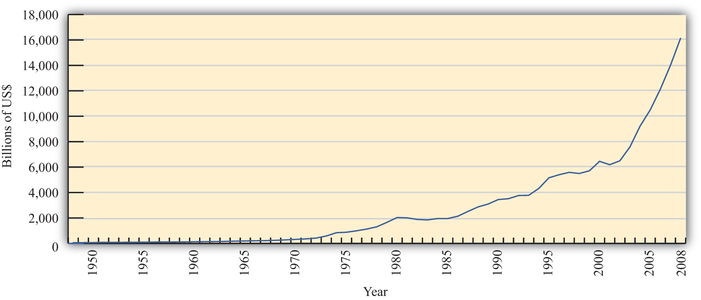
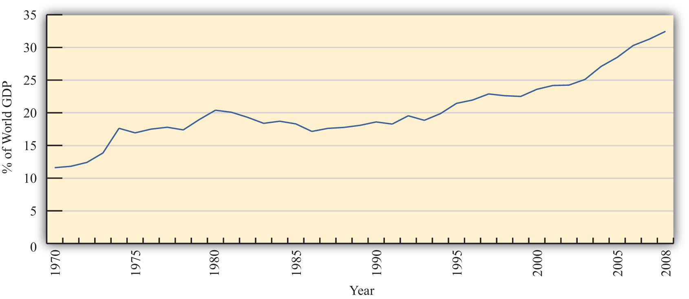
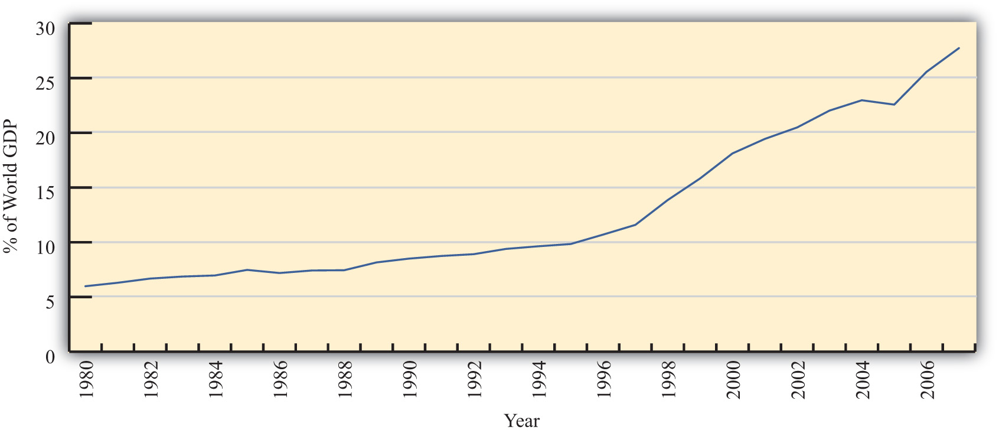

Economics is a social science whose purpose is to understand the workings of the real-world economy. An economy is something that no one person can observe in its entirety. We are all a part of the economy, we all buy and sell things daily, but we cannot observe all parts and aspects of an economy at any one time.
For this reason, economists build mathematical models, or theories, meant to describe different aspects of the real world. For some students, economics seems to be all about these models and theories, these abstract equations and diagrams. However, in actuality, economics is about the real world, the world we all live in.
For this reason, it is important in any economics course to describe the conditions in the real world before diving into the theory intended to explain them. In this case, in a textbook about international trade, it is very useful for a student to know some of the policy issues, the controversies, the discussions, and the history of international trade.
This first chapter provides an overview of the real world with respect to international trade. It explains not only where we are now but also where we have been and why things changed along the way. It describes current trade laws and institutions and explains why they have been implemented.
With this overview about international trade in the real world in mind, a student can better understand why the theories and models in the later chapters are being developed. This chapter lays the groundwork for everything else that follows.
International economics is growing in importance as a field of study because of the rapid integration of international economic markets. Increasingly, businesses, consumers, and governments realize that their lives are affected not only by what goes on in their own town, state, or country but also by what is happening around the world. Consumers can walk into their local shops today and buy goods and services from all over the world. Local businesses must compete with these foreign products. However, many of these same businesses also have new opportunities to expand their markets by selling to a multitude of consumers in other countries. The advance of telecommunications is also rapidly reducing the cost of providing services internationally, while the Internet will assuredly change the nature of many products and services as it expands markets even further.
One simple way to see the rising importance of international economics is to look at the growth of exports in the world during the past fifty or more years. Figure 1.1 "World Exports, 1948–2008 (in Billions of U.S. Dollars)" shows the overall annual exports measured in billions of U.S. dollars from 1948 to 2008. Recognizing that one country’s exports are another country’s imports, one can see the exponential growth in outflows and inflows during the past fifty years.
Figure 1.1 World Exports, 1948–2008 (in Billions of U.S. Dollars)
Source: World Trade Organization, International trade and tariff data, http://www.wto.org/english/res_e/statis_e/statis_e.htm.
However, rapid growth in the value of exports does not necessarily indicate that trade is becoming more important. A better method is to look at the share of traded goods in relation to the size of the world economy. Figure 1.2 "World Exports, 1970–2008 (Percentage of World GDP)" shows world exports as a percentage of the world gross domestic product (GDP) for the years 1970 to 2008. It shows a steady increase in trade as a share of the size of the world economy. World exports grew from just over 10 percent of the GDP in 1970 to over 30 percent by 2008. Thus trade is not only rising rapidly in absolute terms; it is becoming relatively more important too.
Figure 1.2 World Exports, 1970–2008 (Percentage of World GDP)
Source: IMF World Economic Outlook Database, http://www.imf.org/external/pubs/ft/weo/2009/02/weodata/index.aspx.
One other indicator of world interconnectedness can be seen in changes in the amount of foreign direct investment (FDI). FDI is foreign ownership of productive activities and thus is another way in which foreign economic influence can affect a country. Figure 1.3 "World Inward FDI Stocks, 1980–2007 (Percentage of World GDP)" shows the stock, or the sum total value, of FDI around the world taken as a percentage of the world GDP between 1980 and 2007. It gives an indication of the importance of foreign ownership and influence around the world. As can be seen, the share of FDI has grown dramatically from around 5 percent of the world GDP in 1980 to over 25 percent of the GDP just twenty-five years later.
Figure 1.3 World Inward FDI Stocks, 1980–2007 (Percentage of World GDP)
Source: IMF World Economic Outlook Database, http://www.imf.org/external/pubs/ft/weo/2009/02/weodata/index.aspx; UNCTAD, FDI Statistics: Division on Investment and Enterprise, http://www.unctad.org/Templates/Page.asp?intItemID=4979&lang=1.
The growth of international trade and investment has been stimulated partly by the steady decline of trade barriers since the Great Depression of the 1930s. In the post–World War II era, the General Agreement on Tariffs and TradeAn international agreement among countries, established in 1948, promoting trade liberalization through the reduction of tariff rates and other barriers to trade until its conversion to the WTO in 1995., or GATT, prompted regular negotiations among a growing body of members to reciprocally reduce tariffs (import taxes) on imported goods. During each of these regular negotiations (eight of these rounds were completed between 1948 and 1994), countries promised to reduce their tariffs on imports in exchange for concessions—that means tariffs reductions—by other GATT members. When the Uruguay RoundThe eighth and last round of GATT trade liberalization negotiations that substantially expanded the number and scope of trade liberalization agreements and established the WTO., the most recently completed round, was finalized in 1994, the member countries succeeded in extending the agreement to include liberalization promises in a much larger sphere of influence. Now countries not only would lower tariffs on goods trade but also would begin to liberalize the agriculture and services markets. They would eliminate the many quota systems—like the multifiber agreement in clothing—that had sprouted up in previous decades. And they would agree to adhere to certain minimum standards to protect intellectual property rights such as patents, trademarks, and copyrights. The World Trade Organization (WTO)An international agency whose purpose is to monitor and enforce the Uruguay Round trade liberalization agreements and to promote continuing liberalizing initiatives with continuing rounds of negotiation. was created to manage this system of new agreements, to provide a forum for regular discussion of trade matters, and to implement a well-defined process for settling trade disputes that might arise among countries.
As of 2009, 153 countries were members of the WTO “trade liberalization club,” and many more countries were still negotiating entry. As the club grows to include more members—and if the latest round of trade liberalization talks, called the Doha Round, concludes with an agreement—world markets will become increasingly open to trade and investment.Note that the Doha Round of discussions was begun in 2001 and remains uncompleted as of 2009.
Another international push for trade liberalization has come in the form of regional free trade agreements. Over two hundred regional trade agreements around the world have been notified, or announced, to the WTO. Many countries have negotiated these agreements with neighboring countries or major trading partners to promote even faster trade liberalization. In part, these have arisen because of the slow, plodding pace of liberalization under the GATT/WTO. In part, the regional trade agreements have occurred because countries have wished to promote interdependence and connectedness with important economic or strategic trade partners. In any case, the phenomenon serves to open international markets even further than achieved in the WTO.
These changes in economic patterns and the trend toward ever-increasing openness are an important aspect of the more exhaustive phenomenon known as globalization. Globalization more formally refers to the economic, social, cultural, or environmental changes that tend to interconnect peoples around the world. Since the economic aspects of globalization are certainly the most pervasive of these changes, it is increasingly important to understand the implications of a global marketplace on consumers, businesses, and governments. That is where the study of international economics begins.
International economics is a field of study that assesses the implications of international trade, international investment, and international borrowing and lending. There are two broad subfields within the discipline: international trade and international finance.
International trade is a field in economics that applies microeconomic models to help understand the international economy. Its content includes basic supply-and-demand analysis of international markets; firm and consumer behavior; perfectly competitive, oligopolistic, and monopolistic market structures; and the effects of market distortions. The typical course describes economic relationships among consumers, firms, factory owners, and the government.
The objective of an international trade course is to understand the effects of international trade on individuals and businesses and the effects of changes in trade policies and other economic conditions. The course develops arguments that support a free trade policy as well as arguments that support various types of protectionist policies. By the end of the course, students should better understand the centuries-old controversy between free trade and protectionism.
International finance applies macroeconomic models to help understand the international economy. Its focus is on the interrelationships among aggregate economic variables such as GDP, unemployment rates, inflation rates, trade balances, exchange rates, interest rates, and so on. This field expands basic macroeconomics to include international exchanges. Its focus is on the significance of trade imbalances, the determinants of exchange rates, and the aggregate effects of government monetary and fiscal policies. The pros and cons of fixed versus floating exchange rate systems are among the important issues addressed.
This international trade textbook begins in this chapter by discussing current and past issues and controversies relating to microeconomic trends and policies. We will highlight past trends both in implementing policies that restrict trade and in forging agreements to reduce trade barriers. It is these real-world issues that make the theory of international trade worth studying.
Jeopardy Questions. As in the popular television game show, you are given an answer to a question and you must respond with the question. For example, if the answer is “a tax on imports,” then the correct question is “What is a tariff?”
The most common way to protect one’s economy from import competition is to implement a tariff: a tax on imports. Generally speaking, a tariff is any tax or fee collected by a government. Sometimes the term “tariff” is used in a nontrade context, as in railroad tariffs. However, the term is much more commonly used to refer to a tax on imported goods.
Tariffs have been applied by countries for centuries and have been one of the most common methods used to collect revenue for governments. Largely this is because it is relatively simple to place customs officials at the border of a country and collect a fee on goods that enter. Administratively, a tariff is probably one of the easiest taxes to collect. (Of course, high tariffs may induce smuggling of goods through nontraditional entry points, but we will ignore that problem here.)
Tariffs are worth defining early in an international trade course since changes in tariffs represent the primary way in which countries either liberalize trade or protect their economies. It isn’t the only way, though, since countries also implement subsidies, quotas, and other types of regulations that can affect trade flows between countries. These other methods will be defined and discussed later, but for now it suffices to understand tariffs since they still represent the basic policy affecting international trade patterns.
When people talk about trade liberalization, they generally mean reducing the tariffs on imported goods, thereby allowing the products to enter at lower cost. Since lowering the cost of trade makes it more profitable, it will make trade freer. A complete elimination of tariffs and other barriers to trade is what economists and others mean by free trade. In contrast, any increase in tariffs is referred to as protection, or protectionism. Because tariffs raise the cost of importing products from abroad but not from domestic firms, they have the effect of protecting the domestic firms that compete with imported products. These domestic firms are called import competitors.
There are two basic ways in which tariffs may be levied: specific tariffs and ad valorem tariffs. A specific tariff is levied as a fixed charge per unit of imports. For example, the U.S. government levies a $0.51 specific tariff on every wristwatch imported into the United States. Thus, if one thousand watches are imported, the U.S. government collects $510 in tariff revenue. In this case, $510 is collected whether the watch is a $40 Swatch or a $5,000 Rolex.
An ad valorem tariff is levied as a fixed percentage of the value of the commodity imported. “Ad valorem” is Latin for “on value” or “in proportion to the value.” The United States currently levies a 2.5 percent ad valorem tariff on imported automobiles. Thus, if $100,000 worth of automobiles are imported, the U.S. government collects $2,500 in tariff revenue. In this case, $2,500 is collected whether two $50,000 BMWs or ten $10,000 Hyundais are imported.
Occasionally, both a specific and an ad valorem tariff are levied on the same product simultaneously. This is known as a two-part tariff. For example, wristwatches imported into the United States face the $0.51 specific tariff as well as a 6.25 percent ad valorem tariff on the case and the strap and a 5.3 percent ad valorem tariff on the battery. Perhaps this should be called a three-part tariff!
As the above examples suggest, different tariffs are generally applied to different commodities. Governments rarely apply the same tariff to all goods and services imported into the country. Several countries prove the exception, though. For example, Chile levies a 6 percent tariff on every imported good, regardless of the category. Similarly, the United Arab Emirates sets a 5 percent tariff on almost all items, while Bolivia levies tariffs either at 0 percent, 2.5 percent, 5 percent, 7.5 percent, or 10 percent. Nonetheless, simple and constant tariffs such as these are uncommon.
Thus, instead of one tariff rate, countries have a tariff schedule that specifies the tariff collected on every particular good and service. In the United States, the tariff schedule is called the Harmonized Tariff Schedule (HTS) of the United States. The commodity classifications are based on the international Harmonized Commodity Coding and Classification System (or the Harmonized System) established by the World Customs Organization.
Tariff rates for selected products in the United States in 2009 are available in Chapter 1 "Introductory Trade Issues: History, Institutions, and Legal Framework", Section 1.8 "Appendix A: Selected U.S. Tariffs—2009".
One method used to measure the degree of protectionism within an economy is the average tariff rate. Since tariffs generally reduce imports of foreign products, the higher the tariff, the greater the protection afforded to the country’s import-competing industries. At one time, tariffs were perhaps the most commonly applied trade policy. Many countries used tariffs as a primary source of funds for their government budgets. However, as trade liberalization advanced in the second half of the twentieth century, many other types of nontariff barriers became more prominent.
Table 1.1 "Average Tariffs in Selected Countries (2009)" provides a list of average tariff rates in selected countries around the world. These rates were calculated as the simple average tariff across more than five thousand product categories in each country’s applied tariff schedule located on the World Trade Organization (WTO) Web site. The countries are ordered by highest to lowest per capita income.
Table 1.1 Average Tariffs in Selected Countries (2009)
| Country | Average Tariff Rates (%) |
|---|---|
| United States | 3.6 |
| Canada | 3.6 |
| European Community (EC) | 4.3 |
| Japan | 3.1 |
| South Korea | 11.3 |
| Mexico | 12.5 |
| Chile | 6.0 (uniform) |
| Argentina | 11.2 |
| Brazil | 13.6 |
| Thailand | 9.1 |
| China | 9.95 |
| Egypt | 17.0 |
| Philippines | 6.3 |
| India | 15.0 |
| Kenya | 12.7 |
| Ghana | 13.1 |
Generally speaking, average tariff rates are less than 20 percent in most countries, although they are often quite a bit higher for agricultural commodities. In the most developed countries, average tariffs are less than 10 percent and often less than 5 percent. On average, less-developed countries maintain higher tariff barriers, but many countries that have recently joined the WTO have reduced their tariffs substantially to gain entry.
The first problem with using average tariffs as a measure of protection in a country is that there are several different ways to calculate an average tariff rate, and each method can give a very different impression about the level of protection.
The tariffs in Table 1.1 "Average Tariffs in Selected Countries (2009)" are calculated as a simple average. To calculate this rate, one simply adds up all the tariff rates and divides by the number of import categories. One problem with this method arises if a country has most of its trade in a few categories with zero tariffs but has high tariffs in many categories it would never find advantageous to import. In this case, the average tariff may overstate the degree of protection in the economy.
This problem can be avoided, to a certain extent, if one calculates the trade-weighted average tariff. This measure weighs each tariff by the share of total imports in that import category. Thus, if a country has most of its imports in a category with very low tariffs but has many import categories with high tariffs and virtually no imports, then the trade-weighted average tariff would indicate a low level of protection. The simple way to calculate a trade-weighted average tariff rate is to divide the total tariff revenue by the total value of imports. Since these data are regularly reported by many countries, this is a common way to report average tariffs. To illustrate the difference, the United States is listed in Table 1.1 "Average Tariffs in Selected Countries (2009)" with a simple average tariff of 3.6 percent. However, in 2008 the U.S. tariff revenue collected came to $29.2 billion from imports of goods totaling $2,126 billion, meaning that the U.S. trade-weighted average tariff was a mere 1.4 percent.
Nonetheless, the trade-weighted average tariff is not without flaws. For example, suppose a country has relatively little trade because it has prohibitive tariffs (i.e., tariffs set so high as to eliminate imports) in many import categories. If it has some trade in a few import categories with relatively low tariffs, then the trade-weighted average tariff would be relatively low. After all, there would be no tariff revenue in the categories with prohibitive tariffs. In this case, a low average tariff could be reported for a highly protectionist country. Also, in this case, the simple average tariff would register as a higher average tariff and might be a better indicator of the level of protection in the economy.
Of course, the best way to overstate the degree of protection is to use the average tariff rate on dutiable imports. This alternative measure, which is sometimes reported, only considers categories in which a tariff is actually levied and ignores all categories in which the tariff is set to zero. Since many countries today have many categories of goods with zero tariffs applied, this measure would give a higher estimate of average tariffs than most of the other measures.
The second major problem with using average tariff rates to measure the degree of protection is that tariffs are not the only trade policy used by countries. Countries also implement quotas, import licenses, voluntary export restraints, export taxes, export subsidies, government procurement policies, domestic content rules, and much more. In addition, there are a variety of domestic regulations that, for large economies at least, can and do have an impact on trade flows. None of these regulations, restrictions, or impediments to trade, affecting both imports and exports, would be captured using any of the average tariff measures. Nevertheless, these nontariff barriers can have a much greater effect on trade flows than tariffs themselves.
Jeopardy Questions. As in the popular television game show, you are given an answer to a question and you must respond with the question. For example, if the answer is “a tax on imports,” then the correct question is “What is a tariff?”
Calculate the amount of tariff revenue collected if a $500 specific tariff is assessed on ten auto imports with the autos valued at $20,000 each.
In the spring of 2009, the world was in the midst of the largest economic downturn since the early 1980s. Economic production was falling and unemployment was rising. International trade had fallen substantially everywhere in the world, while investment both domestically and internationally dried up.
The source of these problems was the bursting of a real estate bubble. Bubbles are fairly common in both real estate and stock markets. A bubble describes a steady and persistent increase in prices in a market—in this case, in the real estate markets in the United States and abroad. When bubbles are developing, many market observers argue that the prices are reflective of true values despite a sharp and unexpected increase. These justifications fool many people into buying the products in the hope that the prices will continue to rise and generate a profit.
When the bubble bursts, the demand driving the price increases ceases and a large number of participants begin to sell off their product to realize their profit. When this occurs, prices quickly plummet. The dramatic drop in real estate prices in the United States in 2007 and 2008 left many financial institutions near bankruptcy. These financial market instabilities finally spilled over into the real sector (i.e., the sector where goods and services are produced), contributing not only to a world recession but also to a new popular attitude that capitalism and free markets may not be working very well. This attitude change may fuel the antiglobalization sentiments that were growing during the previous decade.
As the current economic crisis unfolded, there were numerous suggestions about similarities between this recession and the Great Depression in the 1930s. One big concern was that countries might revert to protectionism to try to save jobs for domestic workers. This is precisely what many countries did at the onset of the Great Depression, and it is widely believed that that reaction made the Depression worse rather than better.
Since the economic crisis began in late 2008, national leaders have regularly vowed to avoid protectionist pressures and maintain current trade liberalization commitments made under the World Trade Organization (WTO) and individual free trade agreements. However, at the same time, countries have raised barriers to trade in a variety of subtle ways. For example, the United States revoked a promise to maintain a program allowing Mexican trucks to enter the United States under the North American Free Trade Agreement (NAFTA), it included “Buy American” provisions it its economic stimulus package, it initiated a special safeguards action against Chinese tire imports, and it brought a case against China at the WTO. Although many of these actions are legal and allowable under U.S. international commitments, they are nevertheless irritating to U.S. trading partners and indicative of the rising pressure to implement policies favorable to domestic businesses and workers. Most other countries have taken similar, albeit subtle, protectionist actions as well.
Nevertheless, this rising protectionism runs counter to a second popular sentiment among people seeking to achieve greater liberalization and openness in international markets. For example, as the recession began, the United States had several free trade areas waiting to be approved by the U.S. Congress: one with South Korea, another with Colombia, and a third with Panama. In addition, the United States has participated in talks recently with many Pacific Rim countries to forge a Trans-Pacific Partnership (TPP) that could liberalize trade around the region. Simultaneously, free trade area discussions continue among many other country pairings around the world.
This current ambivalence among countries and policymakers is nothing new. Since the Great Depression, trade policymaking around the world can be seen as a tug of war between proponents and opponents of trade liberalization. Even as free trade advocates have achieved trade expansions and liberalizations, free trade opponents have often achieved market-closing policies at the same time; three steps forward toward trade liberalization are often coupled with two steps back at the same time.
To illustrate this point, we continue with a discussion of both recent initiatives for trade liberalization and some of the efforts to resist these liberalization movements. We’ll also look back to see how the current policies and discussions have been shaped by events in the past century.
The Doha Round is the name of the current round of trade liberalization negotiations undertaken by WTO member countries. The objective is for all participating countries to reduce trade barriers from their present levels for trade in goods, services, and agricultural products; to promote international investment; and to protect intellectual property rights. In addition, member countries discuss improvements in procedures that outline the rights and responsibilities of the member countries. Member countries decided that a final agreement should place special emphasis on changes targeting the needs of developing countries and the world’s poor and disadvantaged. As a result, the Doha Round is sometimes called the Doha Development Agenda, or DDA.
The Doha Round was begun at the WTO ministerial meeting held in Doha, Qatar, in November 2001. It is the first round of trade liberalization talks under the auspices of the WTO, which was founded in 1994 in the final General Agreement on Tariffs and Trade (GATT) round of talks, the Uruguay Round. Because missed deadlines are commonplace in the history of GATT talks, an old joke is that GATT really means the “General Agreement to Talk and Talk.”
In anticipation, WTO members decided to place strict deadlines for different phases of the agreement. By adhering to the deadlines, countries were more assured that the talks would be completed on schedule in the summer of 2005—but the talks weren’t. So members pushed off the deadline to 2006, and then to 2007, and then to 2008, always reporting that an agreement was near. As of 2009, the Doha Round has still not been completed, testifying to the difficulty of getting 153 member countries to conceive of a trade liberalization agreement that all countries can accept mutually.
This is an important point: WTO rounds (and the GATT rounds before them) are never finalized until every member country agrees to the terms and conditions. Each country offers a set of trade-liberalizing commitments, or promises, and in return receives the trade-liberalizing commitments made by its 152 potential trading partners. This is a much stronger requirement than majority voting, wherein coalitions can force other members into undesirable outcomes. Thus one reason this round has so far failed is because some countries believe that the others are offering too little liberalization relative to the liberalization they themselves are offering.
The DDA is especially complex, not only because 153 countries must reach a consensus, but also because there are so many trade-related issues under discussion. Countries discuss not only tariff reductions on manufactured goods but also changes in agricultural support programs, regulations affecting services trade, intellectual property rights policy and enforcement, and procedures involving trade remedy laws, to name just a few. Reaching an agreement that every country is happy about across all these issues may be more than the system can handle. We’ll have to wait to see whether the Doha Round ever finishes to know if it is possible. Even then, there is some chance an agreement that is achievable may be so watered down that it doesn’t result in much trade liberalization.
The primary stumbling block in the Doha Round (and the previous Uruguay Round too) has been insufficient commitments on agricultural liberalization, especially by the developed countries. Today, agriculture remains the most heavily protected industry around the world. In addition to high tariffs at the borders, most countries offer subsidies to farmers and dairy producers, all of which affects world prices and international trade. Developing countries believe that the low world prices for farm products caused by subsidies in rich countries both prevents them from realizing their comparative advantages and stymies economic development. However, convincing developed country farmers to give up long-standing handouts from their governments has been a difficult to impossible endeavor.
To their credit, developed countries have suggested that they may be willing to accept greater reductions in agricultural subsidies if developing countries would substantially reduce their very high tariff bindings on imported goods and bind most or all of their imported products. Developing countries have argued, however, that because this is the Doha “Development” Round, they shouldn’t be asked to make many changes at all to their trade policies; rather, they argue that changes should be tilted toward greater market access from developing into developed country markets.
Of course, this is not the only impasse in the discussions, as there are many other issues on the agenda. Nevertheless, agricultural liberalization will surely remain one of the major stumbling blocks to continued trade liberalization efforts. And the Doha Round is not dead yet, since continuing discussions behind the spotlight reflect at least some sentiment around the world that further trade liberalization is a worthy goal. But this is not a sentiment shared by all, and indeed opponents almost prevented this WTO round from beginning in the first place. To understand why, we need to go back two years to the Doha Round commencement in Seattle, Washington, in December 1999.
Every two years, the WTO members agreed to hold a ministerial meeting bringing together, at minimum, the trade ministers of the member countries to discuss WTO issues. In 1999, the ministerial was held in Seattle, Washington, in the United States, and because it was over five years since the last round of trade discussions had finished, many members thought it was time to begin a new round of trade talks. There is a well-known “bicycle theory” about international trade talks that says that forward momentum must be maintained or else, like a bicycle, liberalization efforts will stall.
And so the WTO countries decided by 1999 to begin a new “Millennial Round” of trade liberalization talks and to kick off the discussions in Seattle in December 1999. However, two things happened, the first attesting to the difficulty of getting agreement among so many countries and the second attesting to the growing opposition to the principles of free trade itself.
Shortly before the ministers met, they realized that there was not even sufficient agreement among governments about what the countries should discuss in the new round. For example, the United States was opposed to any discussion about trade remedy laws, whereas many developing countries were eager to discuss revisions. Consequently, because no agreement—even about what to talk about—could be reached, the start of the round was postponed.
The second result of the meeting was a cacophony of complaints that rose up from the thousands of protesters who gathered outside the meetings. This result was more profound if only because the resulting disturbances, including property damage and numerous arrests, brought the issues of trade and the WTO to the international stage. Suddenly, the world saw that there was substantial opposition to the principles of the WTO in promoting trade and expanded globalization.
These protests at the Seattle Ministerial were perhaps directed not solely at the WTO itself but instead at a variety of issues brought to the forefront by globalization. Some protesters were there to protest environmental degradation and were worried that current development was unsustainable, others were protesting child labor and unsafe working conditions in developing countries, and still others were concerned about the loss of domestic jobs due to international competition. In many ways, the protesters were an eclectic group consisting of students, labor union members, environmentalists, and even some anarchists.
After Seattle, groups sometimes labeled “antiglobalization groups” began organizing protests at other prominent international governmental meetings, including the biannual World Bank and International Monetary Fund (IMF) meetings, the meeting of the G8 countries, and the World Economic Forum at Davos, Switzerland. The opposition to freer trade, and globalization more generally, was on the rise. At the same time, though, national governments continued to press for more international trade and investment through other means.
Objectively speaking, ambivalence about trade and globalization seems to best characterize the decades of the 1990s and 2000s. Although this was a time of rising protests and opposition to globalization, it was also a time in which substantial movements to freer trade occurred. What follows are some events of the last few decades highlighting this ambivalence.
First off, trade liberalization became all the rage around the world by the late 1980s. The remarkable success of outward-oriented economies such as South Korea, Taiwan, Hong Kong, and Singapore—known collectively as the East Asian Tigers—combined with the relatively poor performance of inward-oriented economies in Latin America, Africa, India, and elsewhere led to a resurgence of support for trade.
Because the Uruguay Round of the GATT was on its way to creating the WTO, many countries decided to jump on the liberalizing bandwagon by joining the negotiations to become founding members of the WTO. One hundred twenty-three countries were members of the WTO upon its inception in 1995, only to grow to 153 members by 2009.
Perhaps the most important new entrant into the WTO was China in 2001. China had wanted to be a founding member of the WTO in 1995 but was unable to overcome the accession hurdle. You see, any country that is already a WTO member has the right to demand trade liberalization concessions from newly acceding members. Since producers around the world were fearful of competition from China, most countries demanded more stringent liberalization commitments than were usually expected from other acceding countries at a similar level of economic development. As a result, it took longer for China to gain entry than for most other countries.
But at the same time that many developing countries were eager to join the WTO, beliefs in freer trade and the WTO were reversing in the United States. Perhaps the best example was the struggle for the U.S. president to secure trade-negotiating authority. First, a little history.
Article 1, section 8 of the U.S. Constitution states, “The Congress shall have the power…to regulate commerce with foreign nations.” This means that decisions about trade policies must be made by the U.S. Senate and House of Representatives, and not by the U.S. president. Despite this, the central agency in trade negotiations today is the United States Trade Representative (USTR), an executive branch (or presidential) agency. The reason for this arrangement is that the U.S. Congress has ceded authority for these activities to the USTR. One such piece of enabling legislation is known as trade promotion authority (TPA).
TPA enables the U.S. president, or more specifically the USTR, to negotiate trade liberalization agreements with other countries. The legislation is known as fast-track authority because it provides for expedited procedures in the approval process by the U.S. Congress. More specifically, for any trade agreement the president presents to the Congress, Congress will vote the agreement, in its entirety, up or down in a yea or nay vote. Congress agrees not to amend or change in any way the contents of the negotiated agreement. The fast-track procedure provides added credibility to U.S. negotiators since trade agreement partners will know the U.S. Congress cannot change the details upon review.
TPA has been given to the U.S. president in various guises since the 1930s. In the post–World War II era, authority was granted to the president to negotiate successive GATT rounds. A more recent incarnation was granted to the president in the Trade Act of 1974. TPA enabled negotiations for the U.S.-Israel free trade area (FTA) in 1985 and NAFTA in 1993. However, this authority expired in 1994 under President Clinton and was never reinstated during the remainder of his presidency. The failure to extend TPA signified the growing discontent, especially in the U.S. House of Representatives, with trade liberalization.
When George W. Bush became president, he wanted to push for more trade liberalization through the expansion of FTAs with regional and strategic trade partners. He managed to gain a renewal of TPA in 2001 (with passage in the House by just one vote, 216 to 215). This enabled President Bush to negotiate and implement a series of FTAs with Chile, Singapore, Australia, Morocco, Jordan, Bahrain, Oman, Central America and the Dominican Republic, and Peru. Awaiting congressional approval (as of December 2009) are FTAs with South Korea, Colombia, and Panama.
Despite these advances toward trade liberalization, TPA expired in 2007 and has not yet been renewed by the U.S. Congress, again representing the ambivalence of U.S. policymakers to embrace freer trade. Another indication is the fact that the FTAs with South Korea, Colombia, and Panama were submitted for approval to Congress before the deadline for TPA expired in 2007 and these agreements still have not been brought forward for a vote by the U.S. Congress.
While the United States slows its advance toward freer trade, other countries around the world continue to push forward. There are new FTAs between China and the Association of Southeast Asian Nations (ASEAN) countries, Japan and the Philippines, Thailand and Chile, Pakistan and China, and Malaysia and Sri Lanka, along with several other new pairings.
Future prospects for trade liberalization versus trade protections are quite likely to depend on the length and severity of the present economic crisis. If the crisis abates soon, trade liberalization may return to its past prominence. However, if the crisis continues for several more years and if unemployment rates remain much higher than usual for an extended time, then demands for more trade protection may increase significantly. Economic crises have proved in the past to be a major contributor to high levels of protection. Indeed, as was mentioned previously, there is keen awareness today that the world may stumble into the trade policy mistakes of the Great Depression. Much of the trade liberalization that has occurred since then can be traced to the desire to reverse the effects of the Smoot-Hawley Tariff Act of 1930. Thus to better understand the current references to our past history, the story of the Great Depression is told next.
Jeopardy Questions. As in the popular television game show, you are given an answer to a question and you must respond with the question. For example, if the answer is “a tax on imports,” then the correct question is “What is a tariff?”
Perhaps the greatest historical motivator for trade liberalization since World War II was the experience of the Great Depression. The Depression ostensibly began with the crash of the U.S. stock market in late 1929. Quite rapidly thereafter, the world economy began to shrink at an alarming pace. In 1930, the U.S. economy shrank by 8.6 percent and the unemployment rate rose to 8.9 percent. With the contraction came a chorus of calls for protection of domestic industries facing competition from imported products.
For U.S. workers, a tariff bill to substantially raise protection was already working its way through the legislature when the economic crisis hit. The objective of higher tariffs was to increase the cost of imported goods so that U.S. consumers would spend their money on U.S. products instead. By doing so, U.S. jobs could be saved in the import-competing industries. Many economists at the time disagreed with this analysis and thought the high tariffs would make things worse. In May 1930, 1,028 economists signed a petition protesting the tariff act and beseeched President Hoover to veto the bill. Despite these objections, in June of 1930 the Smoot-Hawley Tariff Act (aka the Tariff Act of 1930), which raised average tariffs to as much as 60 percent, was passed into law.
However, because higher U.S. tariffs also injured the foreign companies that were exporting into the U.S. market and because the foreign economies were also stagnating and suffering from rising unemployment, they responded to the Smoot-Hawley tariffs with higher tariffs of their own in retaliation. Within several months, numerous U.S. trade partners responded by protecting their own domestic industries with higher trade barriers. The effect was a dramatic drop in international trade flows throughout the world and quite possibly a deepening of the economic crisis.
In subsequent years, the Depression did get much worse. The U.S. economy continued to contract at double-digit rates for several more years, and the unemployment rate peaked in 1933 at 24.9 percent. When Franklin Roosevelt ran for president in 1932, he spoke against the high tariffs. By 1934, a new attitude accepting the advantages of more liberal trade took hold in the U.S. Congress, which passed the Reciprocal Trade Agreements Act (RTAA). The RTAA authorized the U.S. president to negotiate bilateral tariff reduction agreements with other countries.
In practice, the president could send his agents to another country, say Mexico, to offer tariff reductions on a collection of imported items in return for tariff reductions by Mexico on another set of items imported from the United States. Once both sides agreed to the quid pro quo, the agreements would be brought back to the United States and the Mexican governments for approval and passage into law. Over sixty bilateral deals were negotiated under the RTAA, and it set in motion a process of trade liberalization that would continue for decades to come.
The RTAA is significant for two reasons. First, it was one of the earliest times when the U.S. Congress granted trade policymaking authority directly to the president. In later years, this practice continued with congressional approval for presidential trade promotion authority (TPA; aka fast-track authority) that was used to negotiate other trade liberalization agreements. Second, the RTAA served as a model for the negotiating framework of the General Agreement on Tariffs and Trade (GATT). Under the GATT, countries would also offer “concessions,” meaning tariff reductions on imports, in return for comparable concessions from the other GATT members. The main difference is that the RTAA involved bilateral concessions, whereas the GATT was negotiated in a multilateral environment. More on the GATT next.
Jeopardy Questions. As in the popular television game show, you are given an answer to a question and you must respond with the question. For example, if the answer is “a tax on imports,” then the correct question is “What is a tariff?”
The General Agreement on Tariffs and Trade (GATT) was never designed to be a stand-alone agreement. Instead, it was meant to be just one part of a much broader agreement to establish an International Trade Organization (ITO). The ITO was intended to promote trade liberalization by establishing guidelines or rules that member countries would agree to adopt. The ITO was conceived during the Bretton Woods conference attended by the main allied countries in New Hampshire in 1944 and was seen as complementary to two other organizations also conceived there: the International Monetary Fund (IMF) and the World Bank. The IMF would monitor and regulate the international fixed exchange rate system, the World Bank would assist with loans for reconstruction and development, and the ITO would regulate international trade.
The ITO never came into existence, however. Although a charter was drawn, the U.S. Congress never approved it. The main concern was that the agreement would force unwelcome domestic policy changes, especially with respect to wage and employment policies. Because the United States would not participate, other countries had little incentive to participate. Nonetheless, the United States, Britain, and other allied countries maintained a strong commitment to the reduction of tariffs on manufactured goods. Tariffs still remained high in the aftermath of the Depression-era increases. Thus, as discussions over the ITO charter proceeded, the GATT component was finalized early and signed by twenty-three countries in 1948 as a way of jump-starting the trade liberalization process.
The GATT consists of a set of promises, or commitments, that countries make to each other regarding their own trade policies. The goal of the GATT is to make trade freer (i.e., to promote trade liberalization), and thus the promises countries make must involve reductions in trade barriers. Countries that make these commitments and sign on to the agreement are called signatory countries. The discussions held before the commitments are decided are called negotiating rounds. Each round is generally given a name tied either to the location of the meetings or to a prominent figure. There were eight rounds of negotiation under the GATT: the Geneva Round (1948), the Annecy Round (1950), the Torquay Round (1951), the Geneva II Round (1956), the Dillon Round (1962), the Kennedy Round (1967), the Tokyo Round (1979), and the Uruguay Round (1994). Most importantly, the agreements are reached by consensus. A round finishes only when every negotiating country is satisfied with the promises it and all of its negotiating partners are making. The slogan sometimes used is “Nothing Is Agreed Until Everything Is Agreed.”
The promises, or commitments, countries make under the GATT take two forms. First, there are country-specific and product-specific promises. For example, a country (say, the United States) may agree to reduce the maximum tariff charged on a particular item (say, refrigerator imports) to a particular percentage (say, 10 percent). This maximum rate is called a tariff binding, or a bound tariff rate.
In each round, every participating country offers concessions, which involve a list of new tariff bindings—one for every imported product. To achieve trade liberalization, the tariff bindings must be lower than they were previously. However, it is important to note that there is no harmonization of tariff bindings. At the end of a round, signatory countries do not end up with the same tariff rates.
Instead, each country enters a round with a unique tariff set on every item. The expectation in the negotiating round is that each country will ratchet its tariffs downward, on average, from its initial levels. Thus, if Country A enters the discussions with a 10 percent tariff on refrigerator imports, while Country B has a 50 percent tariff, then a typical outcome to the round may have A lowering its tariff binding to 7 percent, while B lowers its to 35 percent—both 30 percent reductions in the tariff binding. Both countries have liberalized trade, but the GATT has not required them to adhere to the same trade policies.
Some countries, especially developing countries, maintain fairly high bound tariffs but have decided to reduce the actual tariff to a level below the bound rate. This tariff is called the applied tariff. Lowering tariffs unilaterally is allowable under the GATT, as is raising the applied rate up to the bound rate. Further discussion of this issue can be found in Chapter 1 "Introductory Trade Issues: History, Institutions, and Legal Framework", Section 1.9 "Appendix B: Bound versus Applied Tariffs".
There is a second form of promise that GATT countries make that is harmonized. These promises involve acceptance of certain principles of behavior with respect to international trade policies. Here, too, there are two types of promises: the first involves core principles regarding nondiscrimination and the second involves allowable exceptions to these principles.
One of the key principles of the GATT, one that signatory countries agree to adhere to, is the nondiscriminatory treatment of traded goods. This means countries assure that their own domestic regulations will not affect one country’s goods more or less favorably than another country’s and will not treat their own goods more favorably than imported goods. There are two applications of nondiscrimination: most-favored nation and national treatment.
Most-favored nation (MFN)The nondiscriminatory treatment toward identical or highly substitutable goods coming from two different countries. refers to the nondiscriminatory treatment toward identical or highly substitutable goods coming from two different countries. For example, if the United States applies a tariff of 2.6 percent on printing press imports from the European Union (EU, one World Trade Organization [WTO] country), then it must apply a 2.6 percent tariff on printing press imports from every other WTO member country. Since all the countries must be treated identically, MFN is a bit of a misnomer since it seems to suggest that one country is most favored, whereas in actuality, it means that countries are equally favored.
The confusion the term generates led the United States in the 1990s to adopt an alternative phrase, normal trade relations (NTR), for use in domestic legislation. This term is a better description of what the country is offering when a new country enters the WTO or when a non-WTO country is offered the same tariff rates as its WTO partner countries. As such, these are two ways to describe the same thing: that is, MFN ≡ NTR.
National treatmentThe nondiscriminatory treatment of identical or highly substitutable domestically produced goods with foreign goods once the foreign products have cleared customs. refers to the nondiscriminatory treatment of identical or highly substitutable domestically produced goods with foreign goods once the foreign products have cleared customs. Thus it is allowable to discriminate by applying a tariff on imported goods that would not be applied to domestic goods, but once the product has passed through customs it must be treated identically. This norm applies then to both state and local taxes, as well as regulations such as those involving health and safety standards. For example, if a state or provincial government applies a tax on cigarettes, then national treatment requires that the same tax rate be applied equally on domestic and foreign cigarettes. Similarly, national treatment would prevent a government from regulating lead-painted imported toys to be sold but not lead-painted domestic toys; if lead is to be regulated, then all toys must be treated the same.
There are several situations in which countries are allowed to violate GATT nondiscrimination principles and previous commitments such as tariff bindings. These represent allowable exceptions that, when implemented according to the guidelines, are GATT sanctioned or GATT legal. The most important exceptions are trade remedies and free trade area allowances.
An important class of exceptions is known as trade remedies. These are laws that enable domestic industries to request increases in import tariffs that are above the bound rates and are applied in a discriminatory fashion. They are called remedies because they are intended to correct for unfair trade practices and unexpected changes in trade patterns that are damaging to those industries that compete with imports.
These remedies are in the GATT largely because these procedures were already a part of the laws of the United States and other allied countries when the GATT was first conceived. Since application of these laws would clearly violate the basic GATT principles of nondiscrimination, exceptions were written into the original agreement, and these remain today. As other countries have joined the GATT/WTO over the years, these countries have also adopted these same laws, since the agreement allows for them. As a result, this legal framework, established in the United States and other developed countries almost a century ago, has been exported to most other countries around the world and has become the basic method of altering trade policies from the commitments made in previous GATT rounds.
Today, the trade remedy laws represent the primary legal method WTO countries can use to raise their levels of protection for domestic industries. By binding countries to maximum levels of protection, the GATT and WTO agreements eliminate their national sovereignty with respect to higher trade barriers.Note that countries are always free to lower trade barriers unilaterally if they wish without violating the agreements. The trade remedy laws offer a kind of safety valve, because in certain prescribed circumstances, countries can essentially renege on their promises.
Antidumping lawsLaws that provide protection to domestic import-competing firms that can show that foreign imported products are being “dumped” in the domestic market. provide protection to domestic import-competing firms that can show that foreign imported products are being “dumped” in the domestic market. Since dumping is often considered an unfair trade practice, antidumping is known as an unfair trade law. Dumping is defined in several different ways. In general, dumping means selling a product at an unfair, or less than reasonable, price. More specifically, dumping is defined as (1) sales in a foreign market at a price less than in the home market, (2) sales in a foreign market at a price that is less than average production costs, or (3) if sales in the home market do not exist, sales in one foreign market at a price that is less than the price charged in another foreign market. The percentage by which the actual price must be raised to reach the fair or reasonable price is called the dumping margin. For example, if a firm sells its product in its home market for $12 but sells it in a foreign market for $10, then the dumping margin is 20 percent since a 20 percent increase in the $10 price will raise it to $12.
Any import-competing industry is allowed to petition its own government for protection under its antidumping law. Protection in the form of an antidumping (AD) duty (i.e., a tariff on imports) can be provided if two conditions are satisfied. First, the government must show that dumping, as defined above, is actually occurring. Second, the government must show that the import-competing firms are suffering from, or are threatened with, material injury as a result of the dumped imports. Injury might involve a reduction in revenues, a loss of profit, declining employment, or other indicators of diminished well-being. If both conditions are satisfied, then an AD duty set equal to the dumping margin can be implemented. After the Uruguay Round, countries agreed that AD duties should remain in place for no more than five years before a review (called a sunset review) must be conducted to determine if the dumping is likely to recur. If a recurrence of dumping is likely, the AD duties may be extended.
Normally, AD investigations determine different dumping margins, even for different firms from the same country. When AD duties are applied, these different firms will have separate tariffs applied to their products. Thus the action is highly discriminatory and would normally violate MFN treatment. The increase in the tariff would also raise it above the bound tariff rate the country reached in the latest negotiating round. However, Article 6 of the original GATT allows this exception.
Antisubsidy lawsLaws that provide protection to domestic import-competing firms that can show that foreign imported products are being directly subsidized by the foreign government. provide protection to domestic import-competing firms that can show that foreign imported products are being directly subsidized by the foreign government. Since foreign subsidies are considered an unfair trade practice, antisubsidy is considered an unfair trade law. The subsidies must be ones that are targeted at the export of a particular product. These are known as specific subsidies. In contrast, generally available subsidies, those that apply to both export firms and domestic firms equally, are not actionable under this provision. The percentage of the subsidy provided by the government is known as the subsidy margin.
Import-competing firms have two recourses in the face of a foreign government subsidy. First, they can appeal directly to the WTO using the dispute settlement procedure (described in Chapter 1 "Introductory Trade Issues: History, Institutions, and Legal Framework", Section 1.7 "The World Trade Organization"). Second, they can petition their own government under their domestic antisubsidy laws. In either case, they must demonstrate two things: (1) that a subsidy is being provided by the foreign government and (2) that the resulting imports have caused injury to the import-competing firms. If both conditions are satisfied, then a country may implement a countervailing duty (CVD)—that is, a tariff on imports set equal to the subsidy margin. As with AD duties, CVDs should remain in place for no more than five years before a sunset review must be conducted to determine if the subsidies continue. If they are still in place, the CVD may be extended.
Since CVDs are generally applied against one country’s firms but not another’s, the action is discriminatory and would normally violate MFN treatment. The higher tariff would also raise it above the bound tariff rate the country reached in the latest negotiating round. Nonetheless, Article 6 of the original GATT allows this exception.
Safeguard laws (aka escape clauses)Laws that provide protection to domestic import-competing firms that suffer a surge of imports. provide protection to domestic import-competing firms that can demonstrate two things: (1) that a surge of imported products has caused disruption in the market for a particular product and (2) that the surge has substantially caused, or threatens to cause, serious injury to the domestic import-competing firms. The use of the term serious injury means that the injury must be more severe than the injury cause in AD and antisubsidy cases. Since import surges are not generally considered to be under the control of the exporting firms or government, safeguard laws are not considered unfair trade laws.
In the event both conditions are satisfied, a country may respond by implementing either tariffs or quotas to protect its domestic industry. If tariffs are used, they are to be implemented in a nondiscriminatory fashion, meaning they are executed equally against all countries. However, if quotas are used, they may be allocated in a way that favors some trading partners more than others. Safeguard actions are also intended to be temporary, lasting no more than four years.
As with antidumping and antisubsidy cases, because a safeguard response involves higher levels of protection, it will likely conflict with the previously agreed bound tariff rates and thus violate the GATT principles. However, Article 19 of the GATT, the so-called escape clause, provides for an exception to the general rules in this case.
Because safeguard actions in effect take away some of the concessions a country has made to others, countries are supposed to give something back in return. An example of acceptable compensation would be the reduction of tariffs on some other items. This extra requirement, together with the need to establish serious rather than material injury, have contributed to making the use of safeguard actions less common relative to antidumping and antisubsidy actions.
China’s Special Safeguards. When China was accepted as a WTO member country in 2001, it agreed to many demands made by other WTO members. One such provision requested by the United States was allowance for a “special safeguard provision.” The agreement reached allowed the United States and all other WTO countries to implement additional safeguard provisions on specific products from China that might suddenly flood their markets.
One important concern at the time was the surge of textile and apparel products that might come after the expiration of the quota system in 2005 under the Uruguay Round’s Agreement on Textiles and Clothing. As a stopgap, countries were allowed to reintroduce quotas or other barriers in the event that imports from China surged in once the official quotas were gone. Both the United States and the EU implemented increased protections in 2005, and China did not enjoy the full benefit of the quota elimination until this safeguard provision expired in 2008.
Additional special safeguards are in place to protect against import surges of other products from China, and these do not expire until 2014. (In the United States, these are called section 421 cases.) Although these provisions are similar to the standard safeguards, they are more lenient in defining an actionable event.
One other common situation requires an exception to the rules of the GATT/WTO. Many countries have decided to take multiple paths toward trade liberalization. The multilateral approach describes the process of the GATT, whereby many countries simultaneously reduce their trade barriers, but not to zero. The alternative approach is referred to as regionalism, whereby two to several countries agree to reduce their tariffs and other barriers to zero—but only among themselves. This is called a regional approach since most times the free trade partners are nearby, or at the very least are significant trading partners (though this isn’t always the case).
In principle, a free trade agreement means free trade will be implemented on all products traded between the countries. In practice, free trade areas often fall short. First, they are rarely implemented immediately; instead, they are put into place over a time horizon of ten, fifteen, or even twenty or more years. Thus many free trade areas (FTAs) today are really in transition to freer trade. Second, FTAs sometimes exempt some products from liberalization. This occurs because of strong political pressure by some domestic industries. If a substantial number of products are exempted, the area is known as a preferential trade arrangement, or a PTA.
Perhaps the most important free trade area implemented in the past fifty years was the European Economic Community formed by the major countries in Western Europe in 1960 that ultimately led to the formation of the European Union in 1993. The term “union” refers to the fact that the area is now a customs union that not only includes free trade in goods and services but also allows for the mobility of workers and other factors of production. In addition, some of the core European countries have taken it one step further by creating and using the euro as a common currency, thus establishing a monetary union in addition to the customs union.
In the United States, an FTA was first implemented with Israel in 1986. An FTA with Canada in 1988 and the inclusion of Mexico with Canada to form the North American Free Trade Agreement (NAFTA) followed. Since the turn of the millennium, the United States has implemented FTAs with Jordan, Bahrain, Morocco, Singapore, Chile, Australia, the Central American Free Trade Agreement—Dominican Republic (CAFTA-DR), and Peru.
An FTA violates the GATT/WTO principle of most-favored nation because MFN requires countries to offer their most liberal trade policy to all GATT/WTO members. When an FTA is formed, the most liberal policy will become a zero tariff, or free trade. However, the original GATT carved out an exception to this rule by including Article 24. Article 24 allows countries to pair up and form free trade areas as long as the FTA moves countries significantly close to free trade and as long as countries notify the GATT/WTO of each new agreement. The simple logic is that an FTA is in the spirit of the GATT since it does involve trade liberalization.
As of 2009, over two hundred FTAs have been notified either to the GATT or the WTO. Many of these have been started in the past fifteen to twenty years, suggesting that regional approaches to trade liberalization have become more popular, especially as progress in the multilateral forum has slowed. This trend has also fueled debate about the most effective way to achieve trade liberalization. For example, is the regional approach a substitute or complement to the multilateral approach?
Jeopardy Questions. As in the popular television game show, you are given an answer to a question and you must respond with the question. For example, if the answer is “a tax on imports,” then the correct question is “What is a tariff?”
What is an antidumping duty? How is its size determined?
What is a countervailing duty? How is its size determined?
The Uruguay Round was the last of eight completed rounds of the GATT. Discussion for the round began in Montevideo, Uruguay, in 1986, and it was hoped that the round would be completed by 1990. However, impasses were frequent, and the round was not finalized until 1994. One reason for the delay is that this round incorporated many new issues in the negotiations.
In earlier rounds, the primary focus was always a continuing reduction in the bound tariff rates charged on imported manufactured goods. As a result of seven completed GATT rounds, by the mid-1980s tariffs in the main developed countries were as low as 5 percent to 10 percent and there was less and less room for further liberalization. At the same time, there were a series of trade issues that sidestepped the GATT trade liberalization efforts over the years. In those areas—like agriculture, textiles and apparel, services, and intellectual property—trade barriers of one sort or another persisted. Thus the ambitious objective of the Uruguay Round was to bring those issues to the table and try to forge a more comprehensive trade liberalization agreement. The goals were reached by establishing a series of supplementary agreements on top of the traditional tariff reduction commitments of the GATT. A few of these agreements are highlighted next.
Protections and support for agricultural industries began wholeheartedly during the Great Depression in the 1930s. Not only were tariffs raised along with most other import products, but a series of price and income support programs were implemented in many countries. When the first GATT agreement was negotiated, special exceptions for agriculture were included, including an allowance to use export subsidies. Recall that export subsidies are subject to retaliation under the antisubsidy code but that requirement was negated for agricultural products. This enabled countries to keep prices for farm products high in the domestic market and, when those prices generated a surplus of food, to dump that surplus on international markets by using export subsidies.
The result of this set of rules implemented worldwide was a severe distortion in agricultural markets and numerous problems, especially for developing countries, whose producers would regularly be forced to compete with low-priced subsidized food for the developed world.
The intention at the start of the Uruguay Round was a major reduction in tariffs and quotas and also in domestic support programs. Indeed, in the United States, the Reagan administration initially proposed a complete elimination of all trade-distorting subsidies to be phased in over a ten-year period. What ultimately was achieved was much more modest. The Uruguay Round agreement missed its deadlines several times because of the reluctance of some countries, especially the European Community (EC), to make many concessions to reduce agricultural subsidies.
Countries did agree to one thing: to make a transition away from quota restrictions on agricultural commodity imports toward tariffs instead—a process called tarifficationA process of converting import quotas to import tariffs. WTO countries agreed to tariffication for all commodities in the Uruguay Round Agreement.. The logic is that tariffs are more transparent and would be easier to negotiate downward in future World Trade Organization (WTO) rounds. A second concession countries made was to accept at least low levels of market access for important commodities. For many countries, important food products had prohibitive quotas in place. A prime example was the complete restriction on rice imports to Japan. The mechanism used to guarantee these minimum levels was to implement tariff-rate quotas. A tariff-rate quotaa low tariff set on a fixed quota of imports and a high tariff set on any imports that occur over that quota. sets a low tariff on a fixed quantity of imports and a high tariff on any imports over that quota. By setting the quota appropriately and setting a relatively low tariff on that amount, a country can easily meet its target minimum import levels.
Trade in services has become an increasingly important share of international trade. Trade in transportation, insurance, banking, health, and other services now accounts for over 20 percent of world trade. However, trade in services is not restricted by tariffs, largely because services are not shipped in a container on a ship, truck, or train. Instead, they are transmitted in four distinct ways. First, they are transmitted by mail, phone, fax, or the Internet; this is called cross-border supply of services, or Mode 1. Second, services are delivered when foreign residents travel to a host country; this is called consumption abroad, or Mode 2. Third, services trade occurs when a foreign company establishes a subsidiary abroad; this is called commercial presence, or Mode 3. Finally, services are delivered when foreign residents travel abroad to supply them; this is called presence of natural persons, or Mode 4. Because of the transparent nature of services, economists often refer to services as “invisibles trade.”
Because services are delivered invisibly, services trade is affected not by tariffs but rather by domestic regulations. For example, the United States has a law in place called the Jones Act, which prohibits products being transported between two U.S. ports on a foreign ship. Consider this circumstance: a foreign ship arrives at one U.S. port and unloads half its cargo. It then proceeds to a second U.S. port where it unloads the remainder. During the trip between ports 1 and 2, the ship is half empty and the shipping company may be quite eager to sell cargo transport services to U.S. firms. After all, since the ship is going to port 2 anyway, the marginal cost of additional cargo is almost zero. This would be an example of Mode 1 services trade, except for the fact that the Jones Act prohibits this activity even though these services could be beneficial to both U.S. firms and to the foreign shipping company.
The Jones Act is only one of innumerable domestic regulations in the United States that restrict foreign supply of services. Other countries maintain numerous regulations of their own, restricting access to U.S. and other service suppliers as well. When the original GATT was negotiated in the 1940s, services trade was relatively unimportant, and thus at the time there was no discussion of services regulations affecting trade. By the time of the Uruguay Round, however, services trade was increasingly important, and yet there were no provisions to discuss regulatory changes that could liberalize services trade. The Uruguay Round changed that.
As a result of Uruguay Round negotiations, GATT member countries introduced the General Agreement on Trade in Services, or GATS. The GATS includes a set of specific commitments countries have made to each other with respect to market access, market access limitations, and exceptions to national treatment in specified services. For example, a country may commit to allowing foreign insurance companies to operate without restrictions. Alternatively, a country may specify limitations perhaps restricting foreign insurance company licenses to a fixed number. A country can also specify a national treatment exception if, say, domestic banks are to be granted certain privileges that foreign banks are not allowed.
Most importantly, if exceptions have not been specified, countries have agreed to maintain most-favored nation (MFN) and national treatment with respect to services provision. This is an important step in the direction of trade liberalization largely because a previously uncovered area of trade that is rapidly growing is now a part of the trade liberalization effort.
During the 1950s, 1960s, and 1970s, as tariffs were being negotiated downward, another type of trade restriction was being used in the textile and apparel industry: voluntary export restraints. A voluntary export restraint (VER) is a restriction set by a government on the quantity of goods that can be exported out of a country during a specified period of time. Often the word “voluntary” is placed in quotes because these restraints were often implemented upon the insistence of the importing nations.
For example, in the mid 1950s, U.S. cotton textile producers faced increases in Japanese exports of cotton textiles that negatively affected their profitability. The U.S. government subsequently negotiated a VER on cotton textiles with Japan. Afterward, textiles began to flood the U.S. market from other sources like Taiwan and South Korea. A similar wave of imports affected the nations in Europe.
The United States and Europe responded by negotiating VERs on cotton textiles with those countries. By the early 1960s, other textile producers, who were producing clothing using the new synthetic fibers like polyester, began to experience the same problem with Japanese exports that cotton producers faced a few years earlier. So VERs were negotiated on exports of synthetic fibers, first from Japan and eventually from many other Southeast Asian nations. These bilateral VERs continued until eventually exporters and importers of textile products around the world held a multilateral negotiation resulting in the Multi-Fiber Agreement (MFA) in 1974. The MFA specified quotas on exports from all major exporting countries to all major importing countries. Essentially, it represented a complex arrangement of multilateral VERs.
The MFA was renewed periodically throughout the 1970s, 1980s, and 1990s, and it represented a significant setback in the pursuit of trade liberalization. Thus, as a part of the Uruguay Round discussions, countries agreed to a significant overhaul of the MFA. First, the agreement was brought under the control of the WTO and renamed the Agreement on Textiles and Clothing (ATC). Second, countries decided to phase out the quotas completely over a ten-year transition period ending on January 1, 2005.
That transition to a quota-less industry did occur as scheduled; however, it is worth noting that many countries continue to maintain higher-than-average tariffs on textile and apparel products. Therefore, one still cannot say that free trade has been achieved.
One major expansion of coverage of a trade liberalization agreement was the inclusion of intellectual property rights (IPR) into the discussion during the Uruguay Round. IPR covers the protections of written materials (copyrights), inventions (patents), and brand names and logos (trademarks). Most countries have established monopoly provisions for these types of creations in order to spur the creation of new writing and inventions and to protect the investments made in the establishment of trademarks. However, many of these protections have been unequally enforced around the world, resulting in a substantial amount of counterfeiting and pirating. The world is abound in fake CDs and DVDs, Gucci and Coach purses, and of course the international favorite, Rolex watches.
To harmonize the IPR protections around the world and to encourage enforcement of these provisions, countries created an IPR agreement called the Trade-Related Aspects of Intellectual Property Rights Agreement, or TRIPS. The TRIPS intends to both encourage trade and protect writers, inventors, and companies from the theft of their hard work and investments.
What is listed and discussed above are just a few of the agreements negotiated during the Uruguay Round. In addition, any round of trade discussions provides an excellent forum for consideration of many other issues that are of particular interest to specific industries. Some of the others include the Agreement on Sanitary and Phytosanitary Measures, which provides guidelines for countries on food safety and plant and animal trade; an agreement on antidumping; the Agreement on Subsidies and Countervailing Measures; the Agreement on Trade-Related Investment Measures (TRIMS); the Agreement on Import-Licensing Procedures; the Agreement on Customs Valuation; the Preshipment Inspection Agreement; the Rules of Origin Agreement; and finally, several plurilateral agreements (meaning they don’t cover everybody) concerning civilian aircraft, government procurement, and dairy products.
Jeopardy Questions. As in the popular television game show, you are given an answer to a question and you must respond with the question. For example, if the answer is “a tax on imports,” then the correct question is “What is a tariff?”
In order to monitor and sustain the complete set of Uruguay Round agreements, the member countries established a new body called the World Trade Organization (WTO). The WTO is a relatively small organization based in Geneva, Switzerland. It has a director-general, currently Pascal Lamy (as of January 2010), and a small staff of economists, lawyers, and others. The goal of the WTO is the same goal as its predecessor, the General Agreement on Tariffs and Trade (GATT): namely, to promote trade liberalization and thereby to foster growth and economic development.
Sometimes the WTO is described as an international organization governing international trade. However, this description can be misleading. The WTO does not make trade rules. The only makers of rules are national governments. In this sense, then, the WTO does not govern anybody. A better way to think of the WTO is as a club of member nations. The club’s purpose is to monitor each member country’s trade policies with respect to the trade agreements that were made in the Uruguay Round. The WTO agreements include thousands of promises for every country, all intending to reduce barriers to trade relative to what the barriers were before the Uruguay Round. The WTO does not represent free trade. At best, the agreements can be described as freer trade.
Besides monitoring each member country’s trade policies, which the WTO fulfills by conducting periodic trade policy reviews of the member countries, the WTO club was also created to deal with disputes. This is surely the most important “power” of the WTO.
Disputes are handled by the Dispute Settlement Body (DSB). The DSB works like a committee that meets regularly to discuss any issues countries may have with respect to each other’s trade policies. The DSB is comprised of one representative from each member country. When they meet, countries have the right to object to the trade policies of another country. However, they cannot object to anything or everything; instead, a country can only object to an unfulfilled promise with respect to one or more of the WTO agreements.
When the Uruguay Round was finalized, each member country went back to its own legislature and changed its trade policies and rules to conform to its new commitments. Sometimes inadvertently and sometimes purposely, some countries do not implement their commitments fully. Or sometimes a country believes that it has fulfilled its commitment, but its trading partner believes otherwise. Or new legislation may violate one of the country’s previous commitments. In these cases, a member country (the complainant) is allowed to register a dispute with the DSB against another member country (the defendant). Resolution of a dispute follows these steps:
Resolution. If the appellate board concurs with a panel decision that a defendant country has violated some of its WTO agreement commitments, there are two paths to resolution:
Since the WTO began in 1995 there have been over four hundred disputes brought to the DSB. A complete listing can be found at the WTO Web site here (http://www.wto.org/english/tratop_e/dispu_e/dispu_status_e.htm). A large number countries have been complainants and defendants although the two countries most often on one side or the other are the United States and the EU. Some of the most well-known disputes have involved bananas, steel, hormone-treated beef, and commercial aircraft. Lesser-known cases have involved narrow product groups such as Circular Welded Carbon Quality Line Pipe, Canned Tuna with Soybean Oil, Combed Cotton Yarn, and Retreaded Tires.
Many cases have been raised once, sent to consultations, and then never raised again. In some cases, consultations are sufficient to settle the dispute. Many other cases proceed to panel formation, appeals, and resolution. In many cases, defendants lose and eventually change their laws to comply with the WTO decision. In other cases, defendants lose and because of their refusal to comply, or their procrastination in complying, complainants suspend concessions. In a few cases, countries have refused to comply and faced no consequences. Occasionally, a defendant wins its case against a complainant.
Overall, the WTO dispute process has worked reasonably well. The cases brought, because they are often targeted to narrow industries, do not affect a huge amount of international trade. Nonetheless the existence of a forum in which to register disputes and a mechanism for resolving them (one that includes some penalties for violations) has had a notable effect of reducing the risk of international trade.
Traders know better what to expect from their trading partners because their partners have committed themselves to particular trade policies and to a resolution mechanism in the event of noncompliance. In a sense, then, it is true that the WTO agreements restrict the freedom of a country to set whatever trade policy it deems appropriate for the moment. That loss of sovereignty, though, is designed to prevent countries from choosing more destructive protectionist policies—policies that are very seductive to voters, especially in an economic crisis. If successful, the WTO could prevent a reoccurrence of Smoot-Hawley and its aftermath both now and in the future.
Jeopardy Questions. As in the popular television game show, you are given an answer to a question and you must respond with the question. For example, if the answer is “a tax on imports,” then the correct question is “What is a tariff?”
Table 1.2 "Special Tariff Classifications in the United States" contains a selection of the U.S. tariff rates specified in the 2009 U.S. Harmonized Tariff Schedule (HTS). The complete U.S. HTS is available at the U.S. International Trade Commission Web site (http://www.usitc.gov).
Table 1.2 Special Tariff Classifications in the United States
| Symbol | Description |
|---|---|
| A, A∗, A+ | Generalized System of Preferences (GSP) |
| AU | U.S.-Australia free trade area (FTA) |
| B | Automotive Products Trade Act |
| BH | U.S.-Bahrain FTA |
| C | Agreement on Civil Aircraft |
| CA, MX | North American Free Trade Agreement (NAFTA): Canada and Mexico |
| CL | U.S.-Chile FTA |
| D | African Growth and Opportunity Act (AGOA) |
| E | Caribbean Basin Economic Recovery Act |
| IL | U.S.-Israel FTA |
| J, J∗, J+ | Andean Trade Preference Act |
| JO | U.S.-Jordan FTA |
| K | Agreement on Pharmaceuticals |
| P, P+ | CAFTA-DR FTA |
| PE | U.S.-Peru FTA |
| MA | U.S.-Morocco FTA |
| OM | U.S.-Oman FTA |
| R | U.S.-Caribbean Trade Partnership Act |
| SG | U.S.-Singapore FTA |
The tariff schedule in Table 1.3 "Selected Tariffs in the United States, 2009" displays four columns. The first column gives a brief description of the product. The second column shows the product classification number. The first two numbers refer to the chapter, the most general product specification. For example, 08 refers to chapter 8, “Edible fruit and nuts; peel of citrus fruit or melons.” The product classification becomes more specific for each digit to the right. Thus 0805 refers more specifically to “Citrus fruit, fresh or dried.” The code 0805 40 refers to “Grapefruit,” and 0805 40 40 refers to “Grapefruit entering between August 1 and September 30.” This classification system is harmonized among about two hundred countries up to the first six digits and is overseen by the World Customs Organization.
The third column displays the “General Rate of Duty” for that particular product. This is the tariff that the United States applies to all countries with most-favored nation (MFN) status, or as it is now referred to in the United States, “normal trade relations” (NTR). The status was renamed NTR to provide a more accurate description of the term. One provision in the U.S. GATT/WTO agreements is that the United States promises to provide every WTO member country with MFN status. As a matter of policy, the United States also typically grants most non-WTO countries the same status. For example, as of 2009, Russia was not a member of the WTO, but the United States applied its NTR tariff rates to Russian imports.
The final column lists special rates of duty that apply to select countries under special circumstances. For each product, you will see a tariff rate followed by a list of symbols in parentheses. The symbols indicate the trade act or free trade agreement that provides special tariff treatment to those countries. A complete list of these is shown in Table 1.2 "Special Tariff Classifications in the United States". Symbols that include a “+” or “∗” generally refer to special exceptions that apply for some countries with that product.
In the standard U.S. tariff schedule, there is one additional column labeled “2.” This is the U.S. non-MFN tariff, meaning essentially the nonspecial tariffs. Many of these tariff rates, especially for product categories that have been around for a long time, are holdovers from the Smoot-Hawley tariffs set in the Tariff Act of 1930. They are significantly higher than the standard MFN tariffs in column 1 but apply to only two countries: Cuba and North Korea.
Table 1.3 Selected Tariffs in the United States, 2009
| Description | HTS Code | MFN/NTR Tariff | Special Tariff |
|---|---|---|---|
| Cauliflower, broccoli | 0704.10.20 | 2.5% (June 5–Oct. 25) | Free (A,AU,BH,CA,CL,E,IL,J,JO,MA,MX,OM,P,PE,SG) |
| 0704.10.40 | 10% (Other, not reduced in size) | Free (A,AU,BH,CA,CL,E,IL,J,JO,MA,MX,OM,P,PE,SG) | |
| 0704.10.60 | 14% (Cut or sliced) |
Free (A,BH,CA,CL,E,IL,J,JO,MA,MX,OM,P,PE) 7% (AU) 3.5% (SG) |
|
| Grapefruit, incl. pomelos | 0805.40.40 | 1.9¢/kg (Aug.–Sept.) | Free (AU,BH,CA,D,E,IL,J,JO,MA,MX,OM,P,PE,SG) |
| 0805.40.60 | 1.5¢/kg (Oct.) |
Free (CA, CL, D, E,IL,J,JO,MX,P,PE, SG) 1¢/kg (AU) 0.9¢/kg (BH) 1.1¢/kg (MA) 1.2¢/kg (OM) |
|
| 0805.40.80 | 2.5¢/kg (Nov.–July) |
Free (CA, D, E, IL, J, JO, MX, P, PE) 1.8¢/kg (AU,MA) 1.5¢/kg (BH) 1¢/kg (CL,SG) 2.2¢/kg (OM) |
|
| Grapes, fresh | 0806.10.20 | $1.13/m3 (Feb. 15–Mar. 31) | Free (A+,AU,BH,CA,CL,D,E,IL,J,JO,MA,MX,OM,P,PE,SG) |
| 0806.10.40 | Free (Apr. 1–June 30) | ||
| 0806.10.60 | $1.80/m3 (any other time) | Free (A+,AU,BH,CA,CL,D,E,IL,J,JO,MA,MX,OM,P,PE,SG) | |
| Ceramic tableware; cups valued over $5.25 per dozen; saucers valued over $3 per dozen; soups, oatmeals, and cereals valued over $6 per dozen; plates not over 22.9 cm in maximum diameter and valued over $6 per dozen; plates over 22.9 but not over 27.9 cm in maximum diameter and valued over $8.50 per dozen; platters or chop dishes valued over $35 per dozen; sugars valued over $21 per dozen; creamers valued over $15 per dozen; and beverage servers valued over $42 per dozen | 6912.00.45 | 4.5% |
Free (A+,AU,CA,CL,D,E,IL,J, JO,MX,P,PE,SG) 2.7% (BH) 2.4% (MA) 4% (OM) |
| Motor cars principally designed for the transport of persons, of all cylinder capacities | 8703.2x.00 | 2.5% | Free (A+,AU,B,BH,CA,CL,D,E,IL,J,JO,MA,MX,OM,P,PE,SG) |
| Motor vehicles for the transport of goods (i.e., trucks), gross vehicle weight exceeding 5 metric tons but less than 20 metric tons | 8704.22.50 | 25% |
Free (A+,AU,B,BH,CA,CL,D,E,IL,J,MA,MX,OM,P,PE) 2.5% (JO) 10% (SG) |
| Bicycles having both wheels not exceeding 63.5 cm in diameter | 8712.00.15 | 11% |
Free (A+,AU,BH,CA,CL,D,E,IL,J,JO,MA,MX,OM,P,PE) 1.3% (SG) |
| Cane sugar | 1701.11.05 | 1.4606¢/kg less 0.020668¢/kg for each degree under 100 degrees but not less than 0.943854¢/kg | Free (A∗,AU,BH,CA,CL,E∗,IL,J,JO,MA,MX,OM,P,PE,SG) |
| Sports footwear: tennis shoes, basketball shoes, gym shoes, training shoes and the like: having uppers of which over 50% of the external surface area is leather | 6404.11.20 | 10.5% |
Free (AU,BH,CA,CL,D,E,IL,J+,JO,MA,MX,OM,P,PE,R) 1.3% (SG) |
| Golf clubs | 9506.31.00 | 4.4% | Free (A,AU,BH,CA,CL,E,IL,J,JO,MA,MX,OM,P,PE,SG) |
| Wristwatches | 9101.11.40 | 51¢ each + 6.25% on case and strap + 5.3% on battery | Free (AU,BH,CA,CL,D,E,IL,J,J+,JO,MA,MX,OM,P,PE,R,SG) |
| Fax machines | 8517.21.00 | Free | |
| Coffee, caffeinated | 0901.21.00 | Free | |
| Tea, green tea, flavored | 0902.10.10 | 6.4% | Free (A,AU,BH,CA,CL,E,IL,J,JO,MA,MX,OM,P,PE,SG) |
The products presented in Table 1.3 "Selected Tariffs in the United States, 2009" were selected to demonstrate several noteworthy features of U.S. trade policy. The WTO reports in the 2006 U.S. trade policy review that most goods enter the United States either duty free or with very low tariffs. Coffee and fax machines are two goods, shown above, representative of the many goods that enter duty free. The average MFN tariff in the United States in 2002 was about 5 percent, although for agricultural goods the rate was almost twice as high. About 7 percent of U.S. tariffs exceed 15 percent; these are mostly sensitive products such as peanuts, dairy, footwear, textiles, and clothing. The trade-weighted average tariff in the United States was only about 1.5 percent in 2003.
One interesting feature of the tariff schedule is the degree of specificity of the products in the HTS schedule. Besides product type, categories are divided according to weight, size, or the time of year. Note especially the description of ceramic tableware and bicycles.
Tariffs vary according to time of entry, as with cauliflower, grapefruit, and grapes. This reflects the harvest season for those products in the United States. When the tariff is low, that product is out of season in the United States. Higher tariffs are in place when U.S. output in the product rises.
Notice the tariffs on cauliflower and broccoli. They are lower if the vegetables are unprocessed. If the product is cut or sliced before arriving in the United States, the tariff rises to 14 percent. This reflects a case of tariff escalation. Tariff escalation means charging a higher tariff the greater the degree of processing for a product. This is a common practice among many developed countries and serves to protect domestic processing industries. Developing countries complain that these practices impede their development by preventing them from competing in more advanced industries. Consequently, tariff escalation is a common topic of discussion during trade liberalization talks.
Tariff rates also vary with different components of the same product, as with watches. Note also that watches have both specific tariffs and ad valorem tariffs applied.
Notice that the tariff on cars in the United States is 2.5 percent, but the tariff on truck imports is ten times that rate at 25 percent. The truck tariff dates back to 1963 and is sometimes referred to as the “chicken tax.” It was implemented primarily to affect Volkswagen in retaliation for West Germany’s high tariff on chicken imports from the United States. Today, Canada and Mexico are exempt from the tariff due to NAFTA, and Australia will also be exempt with the new U.S.-Australia FTA. The truck tax is set to be a contentious issue in current U.S.-Thailand FTA discussions.
The tariff rates themselves are typically set to several significant digits. One has to wonder why the United States charges 4.4 percent on golf clubs rather than an even 4 percent or 5 percent. Much worse is the tariff rate on cane sugar with six significant digits.
The special tariff rates are often labeled “free,” meaning these goods enter duty-free from that group of countries. Note that Chile and Singapore sometimes have tariff rates in between the MFN rate and zero. This reflects the FTA’s phase in the process. Most FTAs include a five- to fifteen-year phase-in period during which time tariffs are reduced annually toward zero.
One thing to think about while reviewing this tariff schedule is the administrative cost of monitoring and taxing imported goods. Not only does the customs service incur costs to properly categorize and measure goods entering the country, but foreign firms themselves must be attuned to the intricacies of the tariff schedule of all the countries to which they export. All of this requires the attention and time of employees of the firms and represents a cost of doing business. These administrative costs are rarely included in the evaluation of trade policies.
An administratively cheaper alternative would be to charge a fixed ad valorem tariff on all goods that enter, much like a local sales tax. However, for political reasons, it would be almost impossible to switch to this much simpler alternative.
Jeopardy Questions. As in the popular television game show, you are given an answer to a question and you must respond with the question. For example, if the answer is “a tax on imports,” then the correct question is “What is a tariff?” [Note: the following exercises are meant to provide practice in reading and interpreting the U.S. tariff schedule.]
The WTO agreement includes commitments by countries to bind their tariff rates at an agreed-upon maximum rate for each import product category. The maximum tariff in a product category is called the bound tariff rate. The bound tariff rates differ across products and across countries: some countries agree to higher maximums; others agree to lower maximums. In general, less-developed countries have higher bound tariff rates than developed countries, reflecting their perception that they need greater protection from competition against the more highly developed industries in the developed markets.
However, some countries, especially those with higher bound tariffs, decide to set their actual tariffs at lower levels than their bound rates. The actual tariff rate is called the applied tariff rate. Table 1.4 "Bound versus Applied Average Tariffs" lists the average applied tariff rates compared to average bound tariffs for a selected set of WTO member countries.The averages are calculated as a simple average: namely, the ad valorem tariff rates (bound or applied) are added together and divided by the total number of tariff categories. These are not trade-weighted average tariffs. Also, when specific tariffs are assessed for a product, they are excluded from the calculations. (Note that specific tariffs are set as a dollar charge per unit of imports.) Also listed is the percentage of six-digit tariff lines that have a tariff binding. For products that have no tariff binding, the country is free to set whatever tariff it wishes. The countries are ordered from the highest to the lowest gross domestic product (GDP) per person.
Table 1.4 Bound versus Applied Average Tariffs
| Country | Applied Rate (%) | Bound Rate (%) | % Bound |
|---|---|---|---|
| United States | 3.6 | 3.6 | 100.0 |
| Canada | 3.6 | 5.1 | 99.7 |
| EC | 4.3 | 4.1 | 100.0 |
| Japan | 3.1 | 2.9 | 99.6 |
| South Korea | 11.3 | 16.0 | 94.7 |
| Mexico | 12.5 | 34.9 | 100.0 |
| Chile | 6.0 (uniform) | 25.1 | 100.0 |
| Argentina | 11.2 | 32.0 | 100.0 |
| Brazil | 13.6 | 31.4 | 100.0 |
| Thailand | 9.1 | 25.7 | 74.7 |
| China | 9.95 | 10.0 | 100.0 |
| Egypt | 17.0 | 36.8 | 99.3 |
| Philippines | 6.3 | 25.6 | 66.8 |
| India | 15.0 | 49.7 | 73.8 |
| Kenya | 12.7 | 95.7 | 14.6 |
| Ghana | 13.1 | 92.5 | 14.3 |
Table 1.4 "Bound versus Applied Average Tariffs" reveals the following things worth noting:
Jeopardy Questions. As in the popular television game show, you are given an answer to a question and you must respond with the question. For example, if the answer is “a tax on imports,” then the correct question is “What is a tariff?”